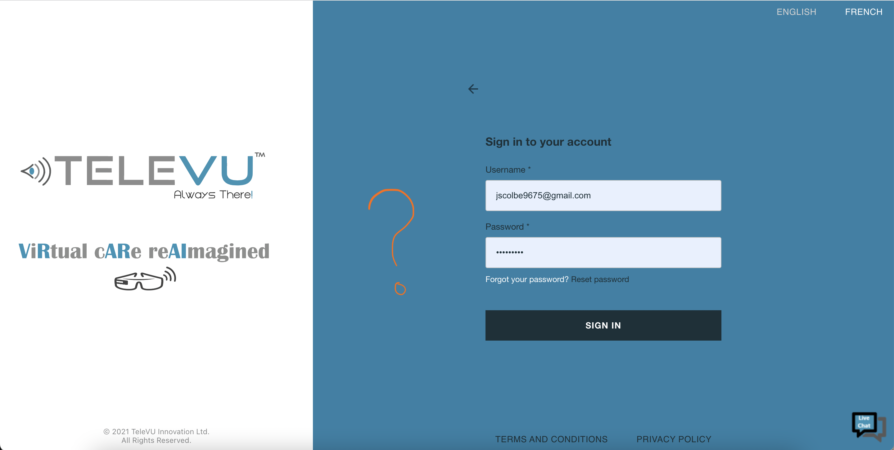

Lessons
Learned
Login Page
The login process needs to be simplified.

The clinicians have pointed out that the login process needs
to be simplified.
What did we learn?
My team and I have learnt that the login process was not as
confusing to the clinicians who were interested in using the
service. In fact, the client offers tutorial to the customers
before the customers can practically use the service; therefore,
the clinicians understand how to login.
On the other hand, the client's customers still did not like the
fact that the login was in two-steps. Basically, they felt that it
was not necessary to click the "Sign in with another organization"
button if they were still supposed to write their login id and
password in the following screen. They said that one-step login
process will do.
What did we learn?
Fact:
Unlike what we had assumed, the client's customers did not
encounter as much difficulty in navigating through the menus due
to the tutorial. On the other hand, they still admitted that it
takes time to be familiar with the menu names.
Video Conference Session
The layout in the video-conference session was confusing that the
clinicians struggled to stay engaged in the calls.
What did we learn?
The client's customers have confirmed that the buttons need to be
re-organized. Since they already knew that one layer of menu is
meant to control the Desktop PC and the other layer of menu is for
the mobile screen that's also displayed on the Desktop PC, they
were getting used to the controls. However, they have mentioned
that there needs to be some work done in organization.
History
The layout in the video-conference session was confusing that the
clinicians struggled to stay engaged in the calls.
What did we learn?
The client's customers have confirmed that the buttons need to be
re-organized. Since they already knew that one layer of menu is
meant to control the Desktop PC and the other layer of menu is for
the mobile screen that's also displayed on the Desktop PC, they
were getting used to the controls. However, they have mentioned
that there needs to be some work done in organization.
Summary
Finished